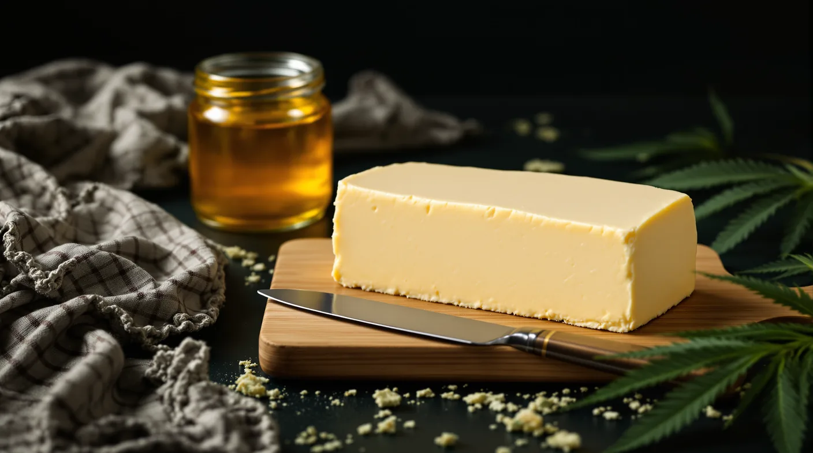

Canna-Butter (Ghee or Butter, Water-Bath Method)
The base infusion for our recipes: ghee or butter infused in a sealed jar in a gentle water bath, with a worked potency example and safe storage.

Key takeaways
- Decarb first, then infuse the flower in ghee or butter in a sealed jar set in barely simmering water for 3 to 4 hours.
- A water bath can't climb past boiling, so the fat stays well below the temperatures where lab tests saw THC losses.
- Grams × 1,000 × THC% is your batch's ceiling; divide it by the teaspoons you strain out.
- Taste a quarter teaspoon or less, then wait at least 2 hours.
- Refrigerate and use within 4 days, or freeze measured portions, and label every container.
This cannabutter recipe infuses decarbed flower into ghee or butter in a sealed mason jar set in barely simmering water for 3 to 4 hours. Ghee has no milk solids to scorch or water to separate out, and THC dissolves into its fat, making a clean, versatile base.
Dosing and safety: estimate before you taste
Strength depends on your flower's THC, the decarb and how much fat the plant keeps, so the worksheet below gives a ceiling to plan from. Taste a quarter teaspoon or less, then give it at least 2 hours; a slow start is normal with edibles, and the effects can stay with you for 4 to 12 hours. See our THC dosage guide.
What you need
- 1 cup ghee or unsalted butter
- 3.5 grams of flower, decarbed and coarsely ground, as in our decarb guide
- A pint mason jar, a deep pot, a rack or folded towel, a thermometer and cheesecloth
You can order flower ahead from our menu for in-store or curbside pickup.
The cannabutter recipe, step by step
Decarb first, around 240°F for 30 to 45 minutes, since THCA converts slowly below boiling. Then hold the sealed jar in water at a bare simmer, 180 to 200°F, for 3 to 4 hours. Water can't pass boiling, so the fat stays well below the temperatures where lab tests saw THC losses. Vent the jar once, halfway, and let the butter drip through cheesecloth without squeezing.
Potency worksheet
- Total THC: the label's figure, or THCA × 0.877 plus THC. 20% THCA and 0.5% THC is about 18%.
- Ceiling: grams × 1,000 × THC%, so 3.5 × 1,000 × 0.18 = 630 mg.
- Yield: measure what you strained, since the plant keeps some fat. Say 42 teaspoons.
- Per teaspoon: 630 ÷ 42 = 15 mg at most, or about 13 mg for a full 48-teaspoon cup.
The 0.877 covers the weight THCA loses as it becomes THC.
Storage and labeling
The CDC says homemade oils made with herbs belong in the fridge for no more than 4 days, and University of Georgia Extension suggests freezing instead. Do the same with infused butter, freezing tablespoon portions in an ice cube tray. Mark every side "infused," with the date and mg per teaspoon, and give it a shelf of its own, beyond the reach of kids and pets.
Using it
Swap it for part of the butter in a recipe and keep the rest plain to hit your dose. Bake it in or stir it in off the heat. For canna-coconut oil, use coconut oil in place of the ghee.
Recipe
- Makes
- About 1 cup
- Prep time
- 45 minutes
- Cook time
- 4 hours
Ingredients
- 3.5 grams (an eighth) cannabis flower, coarsely ground
- 1 cup ghee or unsalted butter
Steps
- Set the oven to 240°F. Scatter the ground flower over parchment on a baking sheet and bake until dry and lightly golden, 30 to 45 minutes. Let it cool.
- Put the decarbed flower and the ghee or butter in a pint mason jar and close the lid finger-tight.
- Set the jar on a rack or folded towel in a deep pot and add warm water up to the level of the fat.
- Bring the water to a bare simmer, about 180 to 200°F, and hold it there for 3 to 4 hours, topping up with hot water as it evaporates.
- Halfway through, lift the jar out with oven mitts, loosen the lid for a moment to release pressure, then close it and return it to the pot.
- Let the jar cool until warm, then strain through cheesecloth into a clean container, letting it drip rather than squeezing.
- Measure the strained fat, work out the mg per teaspoon and label it. Refrigerate and use within 4 days, or freeze in measured portions.
Dosing note
Worked example only: flower testing at 18% total THC gives 3.5 × 1,000 × 0.18 = 630 mg as the batch ceiling. A full cup is 48 teaspoons, about 13 mg each; if you strain out 42 teaspoons, it's about 15 mg. How close you get to that ceiling depends on the flower's true potency and on what decarbing and steeping cost, so real batches usually run lower. Taste no more than a quarter teaspoon the first time and give it at least 2 hours. Mark the container clearly and store it high, out of children's and pets' reach.
Frequently asked questions
How strong is homemade cannabutter?
It depends on your flower and how much fat you strain out. Multiply the flower's weight in grams by its THC fraction (0.18 for 18%) and by 1,000, then divide by the teaspoons in your jar. With 3.5 grams of 18% flower in a cup of ghee, that's 13 to 15 mg per teaspoon at most.
Do I have to decarb before making cannabutter?
Yes, for a predictable strength. Dried flower carries its THC mostly as THCA, which heat converts. In lab tests on cannabis extracts, conversion was still unfinished after an hour below 212°F, the range a water bath stays in. At 230°F, the THCA was nearly gone in 30 minutes.
Can I use regular butter instead of ghee?
Yes. Unsalted butter follows the same steps, but its water and milk solids leave a cloudy layer and some foam. Strain as usual, chill it until it sets, then lift the butter off and pour away the liquid underneath. Measure what's left before doing the math.
Sources
- Wang M. et al., Decarboxylation Study of Acidic Cannabinoids, Cannabis and Cannabinoid Research (2016) pmc.ncbi.nlm.nih.gov
- eCFR, 7 CFR 990.1 (USDA hemp rule): Total THC = (0.877 × THCA) + THC ecfr.gov
- PubChem (NIH): Tetrahydrocannabinol, solubility pubchem.ncbi.nlm.nih.gov
- CDC: Botulism Prevention (homemade oils made with garlic or herbs) cdc.gov
- University of Georgia Extension, Circular 1334: How to Safely Make Infused Oils (2024) fieldreport.caes.uga.edu
- Public Health Agency of Canada: Council of Chief Medical Officers of Health statement on cannabis extracts, edibles and topicals (2020) canada.ca
For adults 21 and older. Keep cannabis away from children and pets, and never drive after consuming. In New Jersey, cannabis smoking is allowed where cigarette smoking is permitted, unless stated otherwise.
1070 Springfield Ave Suite C, Irvington, NJ 07111